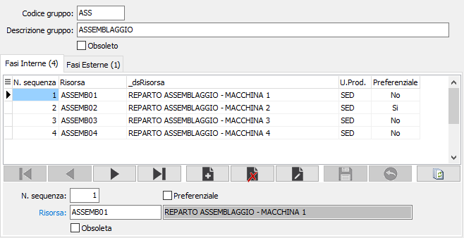
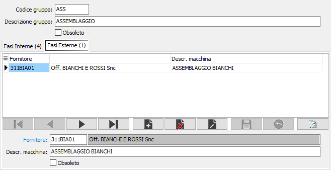

Gruppi fasi
La tabella consente di raggruppate in tipologie omogenee le risorse, sia interne che esterne, al fine di elencare le risorse interne o i terzisti esterni a disposizione per un determinato tipo di lavorazione. Il gruppo fasi è legato alle fasi di produzione (il codice del gruppo è presente sulla tabella fasi) e tramite questo legame sarà controllata in tutte le procedure di produzione la validità della risorsa associata ad un determinato ODL; solo le risorse presenti all'interno del gruppo relativo alla fase in esame saranno accettate come utilizzabili per la fase di produzione stessa.


Ad ogni codice e descrizione gruppo è possibili associare, per le fasi interne le risorsa e per le fasi esterne il fornitore; per quanto riguarda le risorse è possibile indicare la risorsa preferenziale, per unità produttiva, che sarà quella proposta in fase di creazione del ciclo di produzione.